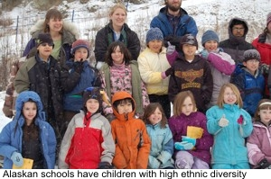
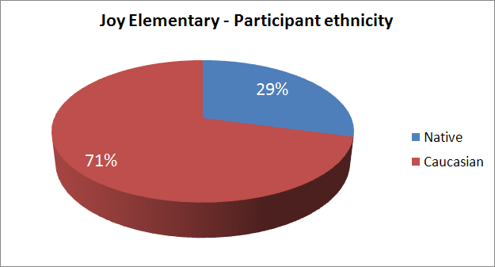
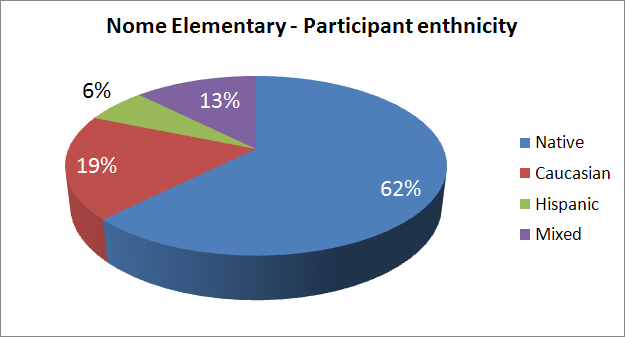
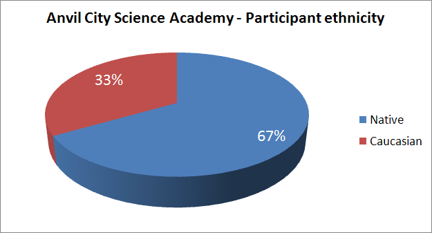

| |
|
|
Diversity
Diversity in Alaska's Schools
Preschool to grade 12 students in Alaska’s schools are ethnically diverse, with approximately
25% Alaska Natives, 4% Asian/Pacific Islanders, 2% African-Americans, 5% Hispanics, and the
remaining 64% Caucasians. There are over 85 languages represented in Alaska’s bilingual programs, most of them indigenous. Participant SchoolsThe two participating schools for the AMIDST project are:



|
| |
|